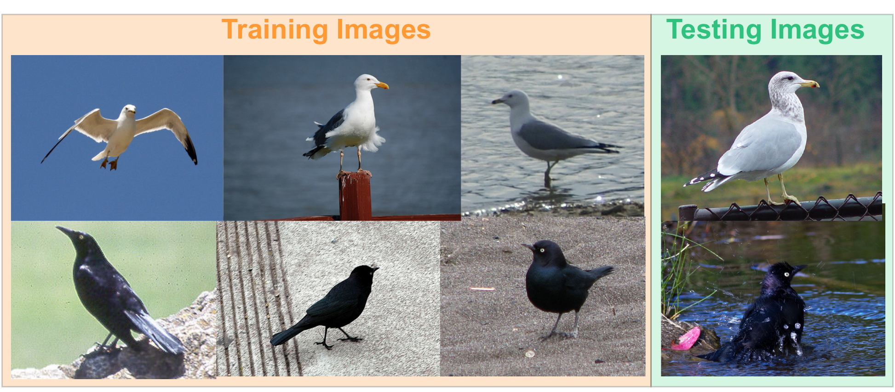
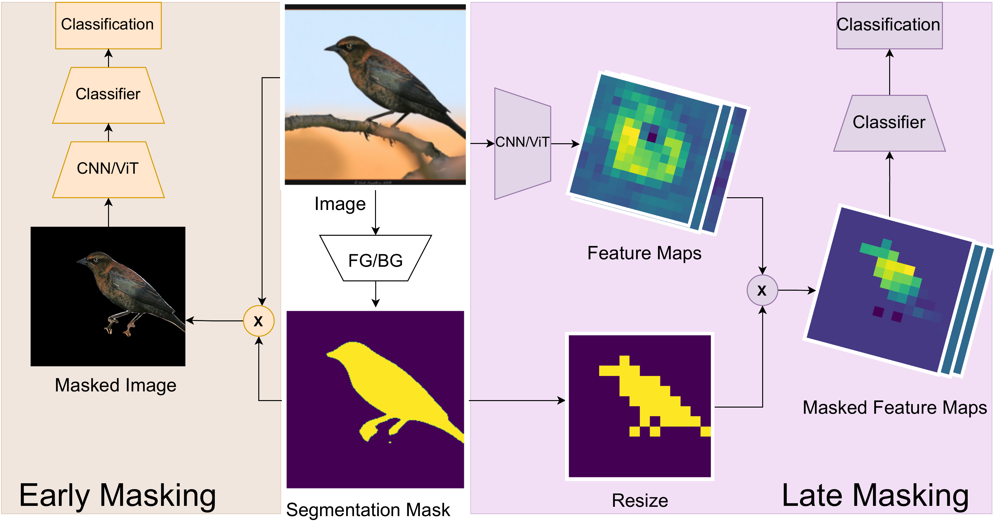

Models for fine-grained image classification tasks, where the difference between some classes can be extremely subtle and the number of samples per class tends to be low, are particularly prone to picking up background-related biases and demand robust methods to handle potential examples with out-of-distribution (OOD) backgrounds.
To gain deeper insights into this critical problem, our research investigates the impact of background-induced bias on fine-grained image classification, evaluating standard backbone models such as Convolutional Neural Networks (CNNs) and Vision Transformers (ViTs). We explore two masking strategies to mitigate background-induced bias: Early masking, which removes background information at the (input) image level, and late masking, which selectively masks high-level spatial features corresponding to the background.
Extensive experiments assess the behavior of CNN and ViT models under different masking strategies, with a focus on their generalization to OOD backgrounds. The obtained findings demonstrate that both proposed strategies enhance OOD performance compared to baseline models, with early masking consistently exhibiting the best OOD performance. Notably, a ViT variant employing GAP-Pooled Patch token-based classification combined with early masking achieves the highest OOD robustness.

Masking at the input image stage ($L = 0$). Background pixels are suppressed prior to entering the backbone:
Masking high-level spatial representations inside the network ($L > 0$):
To obtain the binary foreground mask $\mathbf{m}$, we fine-tune a pre-trained Mask2Former model with a Swin-Tiny backbone on CUB-200-2011 segmentations. The model generalizes exceptionally well, achieving a Mean Dice score of 96.05% on CUB bird foregrounds and 91.84% on out-of-distribution Waterbirds images without any OOD retraining.
All models are trained exclusively on CUB-200-2011 (200 bird species, 5,994 train images) and evaluated on both In-Distribution (CUB test) and Out-Of-Distribution adversarial backgrounds (Waterbirds, 5,794 images on Places365 backgrounds).
| Model | Training Setting | CUB Test (In-Distribution) | Waterbirds Test (Out-of-Distribution) | ||
|---|---|---|---|---|---|
| Original Test | Masked Test | Original Test | Masked Test | ||
| ConvNeXt-S | Baseline | 86.56% | 78.60% | 55.82% | 67.12% |
| Early-Masked | 83.84% | 84.43% | 64.21% +8.39% | 77.33% +10.21% | |
| ConvNeXt-B | Baseline | 88.00% | 77.52% | 65.96% | 68.51% |
| Early-Masked | 84.36% | 85.69% | 67.21% +1.25% | 80.10% +11.59% | |
| ConvNeXt-L | Baseline | 88.05% | 78.68% | 66.83% | 70.69% |
| Early-Masked | 87.22% | 87.38% | 73.67% +6.84% | 82.81% +12.12% | |
| ViT-S | Baseline | 88.26% | 82.27% | 71.15% | 77.59% |
| Early-Masked | 85.89% | 87.92% | 78.61% +7.46% | 84.05% +6.46% | |
| ViT-B | Baseline | 89.20% | 87.69% | 76.65% | 83.00% |
| Early-Masked | 88.35% | 90.10% | 82.15% +5.50% | 86.93% +3.93% | |
| ViT-L | Baseline | 89.79% | 88.91% | 80.76% | 85.61% |
| Early-Masked | 88.35% | 91.06% | 84.67% +3.91% | 88.30% +2.69% | |
Key Takeaway: Across all model scales (Small, Base, Large) and architectures (ConvNeXt & ViT), Early Masking consistently outperforms the baseline on OOD Waterbirds. For ViT-B and ViT-L, early masking also achieves the absolute highest in-distribution accuracy on CUB (90.10% and 91.06%), showing that ViTs are less sensitive to masking boundaries while benefiting from spurious background removal.
| Backbone | Strategy | CUB Test (In-Distribution) | Waterbirds Test (Out-of-Distribution) | ||
|---|---|---|---|---|---|
| Frozen Backbone | Fine-tuned | Frozen Backbone | Fine-tuned | ||
| ConvNeXt-B | Baseline | 88.00% | 89.62% | 65.96% | 76.20% |
| Early-Masked | 85.69% | 90.31% | 80.10% | 87.01% +10.81% | |
| Late-Masked | 87.66% | 88.76% | 77.95% | 78.42% | |
| ViT-B | Baseline | 89.20% | 89.38% | 76.55% | 68.36% -8.19% |
| Early-Masked | 90.10% | 91.37% | 86.93% | 88.81% +20.45% | |
| Late-Masked | 88.61% | 90.73% | 76.55% | 74.76% -1.79% | |
Critical Finding on Fine-Tuning: Fine-tuning the baseline ViT-B without masking causes severe overfitting to background correlations, dropping OOD Waterbirds accuracy from 76.55% down to 68.36% (-8.19%). In sharp contrast, Early Masking completely protects the ViT, boosting its OOD accuracy to 88.81% (+20.45% over fine-tuned baseline) while achieving the highest in-distribution score (91.37%).
| Backbone | Feature Masking Stage | CUB Test (%) | Waterbirds OOD (%) | OOD Relative Improvement |
|---|---|---|---|---|
| ConvNeXt-S | Stage $L$ (Last Stage) | 88.73% | 77.19% | Baseline LM |
| Stage $L-1$ (Second-to-Last) | 89.35% | 81.22% | +4.03% | |
| Stage $0$ (Input Image / Early) | 90.73% | 87.95% | +10.76% | |
| ConvNeXt-B | Stage $L$ (Last Stage) | 88.76% | 78.42% | Baseline LM |
| Stage $L-1$ (Second-to-Last) | 89.04% | 80.04% | +1.62% | |
| Stage $0$ (Input Image / Early) | 90.31% | 87.01% | +8.59% | |
| ConvNeXt-L | Stage $L$ (Last Stage) | 89.80% | 79.39% | Baseline LM |
| Stage $L-1$ (Second-to-Last) | 89.49% | 79.68% | +0.29% | |
| Stage $0$ (Input Image / Early) | 90.99% | 88.19% | +8.80% |
Receptive Field Analysis: Moving the masking stage earlier in the network ($L \to L-1 \to 0$) yields monotonic accuracy gains on both CUB and Waterbirds. Earlier CNN layers feature tighter, strictly localized receptive fields that correlate directly with image patches, whereas deeper layers blend background context into foreground feature channels.
| Backbone | Strategy | ViT Representation | CUB Test (In-Distribution) | Waterbirds Test (Out-of-Distribution) | ||
|---|---|---|---|---|---|---|
| Frozen | Fine-tuned | Frozen | Fine-tuned | |||
| ViT-B | Baseline | CLS Token | 90.04% | 90.47% | 80.35% | 71.35% |
| GAP-Pooled Patch | 62.24% | 90.05% | 24.71% | 67.74% | ||
| CLS + Patch | 89.20% | 89.38% | 76.65% | 68.36% | ||
| Early-Masked | CLS Token | 90.33% | 91.73% | 86.81% | 88.60% | |
| GAP-Pooled Patch | 72.17% | 91.51% | 66.37% | 89.22% Highest OOD | ||
| CLS + Patch | 90.10% | 91.37% | 86.93% | 88.81% | ||
| Late-Masked | CLS Token | 89.16% | 90.78% | 75.10% | 80.54% | |
| GAP-Pooled Patch | 84.15% | 90.85% | 71.63% | 84.50% | ||
| CLS + Patch | 88.61% | 90.73% | 76.55% | 74.76% | ||
ViT Token Insights: The ViT variant utilizing Global Average Pooled (GAP) Patch tokens combined with Early Masking achieves the absolute highest OOD robustness (89.22%) of all evaluated configurations. Because patch tokens preserve explicit spatial locality, masking at the input forces every patch token to encode pure foreground characteristics, eliminating global shortcut cues that bleed into the standard CLS token.
| Segmentation Model | Backbone | CUB-200-2011 Mean Dice (%) | Waterbirds OOD Mean Dice (%) | ||
|---|---|---|---|---|---|
| Background | Bird Foreground | Background | Bird Foreground | ||
| Mask2Former | Swin-T (Selected) | 99.42% | 96.05% | 98.74% | 91.84% |
| Mask2Former | ResNet-50 | 99.43% | 96.12% | 98.72% | 91.81% |
Segmentation Robustness: Fine-tuned Mask2Former with Swin-Tiny backbone achieves >96% Dice on in-distribution CUB birds and maintains 91.84% Dice on OOD Waterbirds without seeing a single Waterbirds or Places365 image during training.
Our implementation supports both Early Masking and Late Feature Masking across ConvNeXt (Small/Base/Large) and DINOv2 Vision Transformers (Small/Base/Large), along with the complete pipeline for binary foreground segmentation using MMSegmentation.
# Early Masking: Masking at the input image level
# Code path: early_masking_and_baseline/fine_tune_dinov2.py
import torch
from torchvision import transforms
def apply_early_masking(image, binary_mask):
"""
image: [B, 3, H, W] normalized input tensor
binary_mask: [B, 1, H, W] binary mask where 1=foreground, 0=background
"""
# Element-wise product suppresses all background pixels
masked_image = image * binary_mask
return masked_image
# Forward pass through backbone and classification head
# y = g_theta2( h_theta1( x * m ) )
masked_inputs = apply_early_masking(inputs, masks)
outputs = model(masked_inputs)# Late Masking: Masking high-level spatial feature representations
# Code path: feature_masking/layers/fm_net_dinov2.py
import torch
import torch.nn as nn
import torch.nn.functional as F
class LateMaskedViT(nn.Module):
def __init__(self, backbone, num_classes=200):
super().__init__()
self.backbone = backbone
self.classifier = nn.Linear(backbone.embed_dim, num_classes)
def forward(self, x, mask):
# Extract spatial patch tokens [B, D, H', W']
spatial_features = self.backbone.get_intermediate_layers(x)[0]
# Downsample binary mask to spatial feature resolution
mask_downsampled = F.interpolate(mask, size=spatial_features.shape[-2:], mode='nearest')
# Apply late feature masking: y = g( z * m' )
masked_features = spatial_features * mask_downsampled
# GAP-pooled patch token classification
pooled = masked_features.mean(dim=[-2, -1])
logits = self.classifier(pooled)
return logits# Download pre-trained Mask2Former Swin-T checkpoint for CUB foreground extraction:
# https://github.com/ananthu-aniraj/masking_strategies_bias_removal/releases/download/model_release/mask2former_swint_iter_160000.pth
# Generate binary masked CUB dataset using MMSegmentation:
python mmsegmentation/gen_masked_image_dataset.py \
--config mmsegmentation/configs/mask2former/mask2former_swin-t_cub.py \
--checkpoint checkpoints/mask2former_swint_iter_160000.pth \
--input_dir data/CUB_200_2011/images \
--output_dir data/cub_binary_masked@InProceedings{Aniraj_2023_ICCV,
author = {Aniraj, Ananthu and Dantas, Cassio F. and Ienco, Dino and Marcos, Diego},
title = {Masking Strategies for Background Bias Removal in Computer Vision Models},
booktitle = {Proceedings of the IEEE/CVF International Conference on Computer Vision (ICCV) Workshops},
month = {October},
year = {2023},
pages = {4397-4405}
}